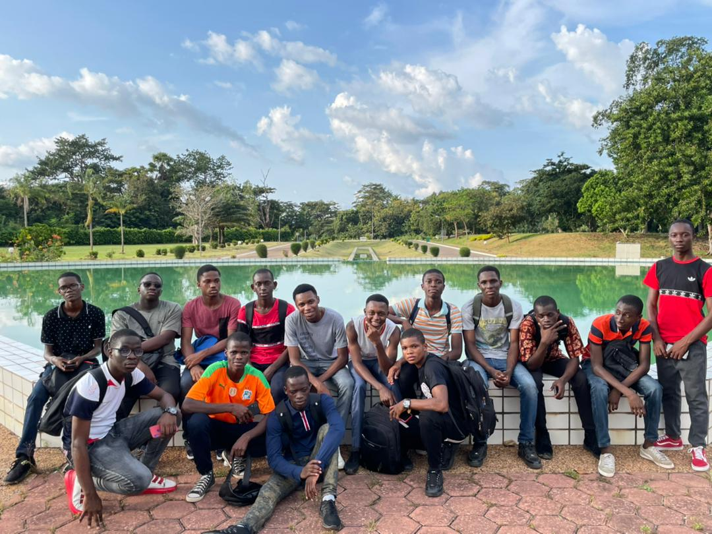

Une visite mémorable de l'INP-HB : À la découverte des salles de classe et des laboratoires
récemment, les étudiants de la classe préparatoire BCPST de l'INP-HB ont eu l'opportunité de participer à une visite exceptionnelle de leur institution. Cette visite, baptisée "Randonnée", leur a permis de découvrir les différents campus et installations de L'Institut . Les étudiants ont ainsi pu explorer leurs salles de classe, les laboratoires de chimie et de géologie situés sur le site sud, le laboratoire de physique sur le site centre, et enfin le laboratoire dédié aux travaux pratiques de biologie sur le site nord. Cette expérience a été enrichissante, offrant aux étudiants un aperçu approfondi des ressources et des équipements disponibles pour leur formation.
La découverte des salles de classe :
La visite a débuté par la découverte des salles de classe de l'INP-HB. Les étudiants ont eu l'occasion de se rendre dans leurs propres salles de cours et d'interagir avec les enseignants. Ils ont pu se familiariser avec l'environnement d'apprentissage et découvrir les outils et les ressources disponibles pour faciliter leur formation. Cette immersion dans leur environnement académique a permis aux étudiants de se sentir plus connectés à leur institution et de mieux appréhender les conditions d'études qui les attendent.
Les laboratoires de chimie et de géologie :
La visite s'est ensuite poursuivie avec les laboratoires de chimie et de géologie situés sur le site sud de l'INP-HB. Les étudiants ont eu l'opportunité de découvrir ces espaces spécialement conçus pour leurs travaux pratiques. Les laboratoires étaient équipés d'appareils sophistiqués et de matériel de pointe, permettant aux étudiants d'explorer les différentes facettes de ces disciplines scientifiques. Les enseignants et les techniciens présents ont partagé leur expertise et ont répondu aux questions des étudiants, offrant ainsi un apprentissage interactif et concret.
Le laboratoire de physique sur le site centre :
La prochaine étape de la visite a conduit les étudiants vers le laboratoire de physique, situé sur le site centre de l'INP-HB. Ce laboratoire était un véritable lieu d'expérimentation et d'apprentissage pour les étudiants en sciences physiques. Les équipements de pointe, tels que les instruments de mesure précis et les dispositifs expérimentaux avancés, ont permis aux étudiants d'approfondir leur compréhension des lois de la physique. Ils ont également pu observer des expériences en cours et discuter avec les enseignants et les chercheurs sur place.
Les laboratoires de travaux pratiques de biologie sur le site nord :
La visite s'est conclue par la découverte des laboratoires dédiés aux travaux pratiques de biologie, situé sur le site nord. Les étudiants ont pu explorer cet espace dédié à l'étude des sciences de la vie. Ils ont observé des spécimens, utilisé du matériel de laboratoire et participé à des démonstrations pratiques. Cela leur a permis d'approfondir leur compréhension des concepts biologiques abordés dans leurs cours théoriques. Les échanges avec les enseignants et les assistants de laboratoire ont également été précieux pour les étudiants, qui ont pu poser des questions et obtenir des conseils.
Conclusion :
La visite de l'INP-HB, appelée "Randonnée", a été une expérience mémorable pour les étudiants. Ils ont eu l'occasion de découvrir leurs salles de classe, ainsi que les laboratoires de chimie, de géologie, de physique et de biologie. Cette immersion dans les différents campus et installations de l'université leur a permis de se familiariser avec leur environnement académique et de mieux comprendre les ressources disponibles pour leur formation. Cette expérience pratique a renforcé leur motivation et leur enthousiasme pour leurs études à l'INP-HB, les préparant ainsi à une expérience éducative enrichissante.